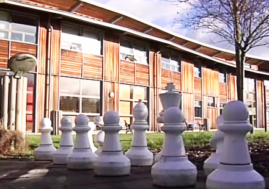
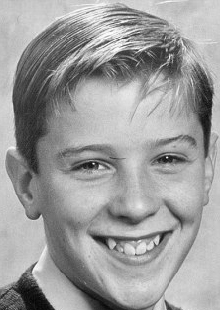
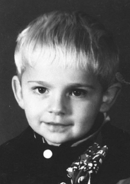
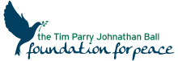
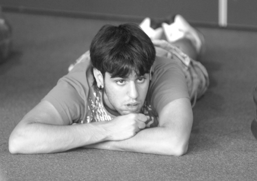

THINK is a bespoke programme aimed at young people aged 14–19 that equips them to THINK critically and confidently about their place in society, and in the process develops their skills, knowledge and understanding around core values and beliefs, allowing them to play a positive role in managing conflict.



Who we are. Watch the above video to find out about who we are.


THINK cultivates curiosity, challenges attitudes, breaks habits and increases resilience to the threat of radicalisation leading to violent extremism by encouraging young people to act rather than react.
All courses take place at the Tim Parry Jonathan Ball Foundation for Peace in Warrington, which was set up by Tim’s parents, supported by Jonathan’s, after both children were killed in the IRA bomb that exploded in the centre of Warrington in 1993.